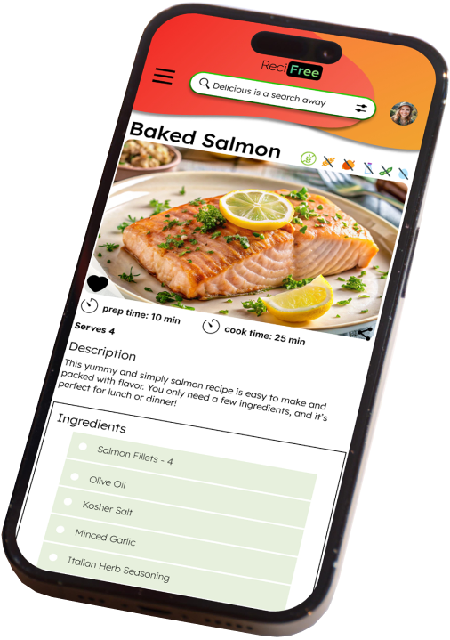
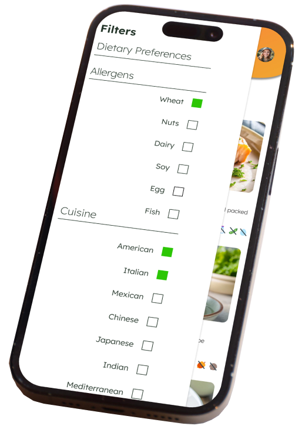
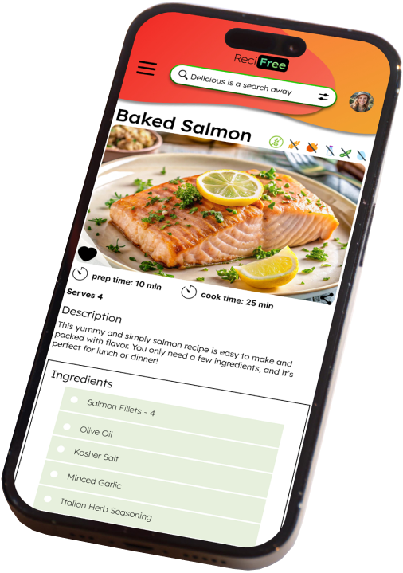
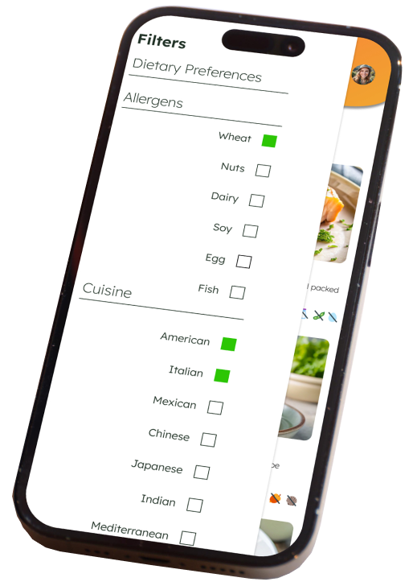
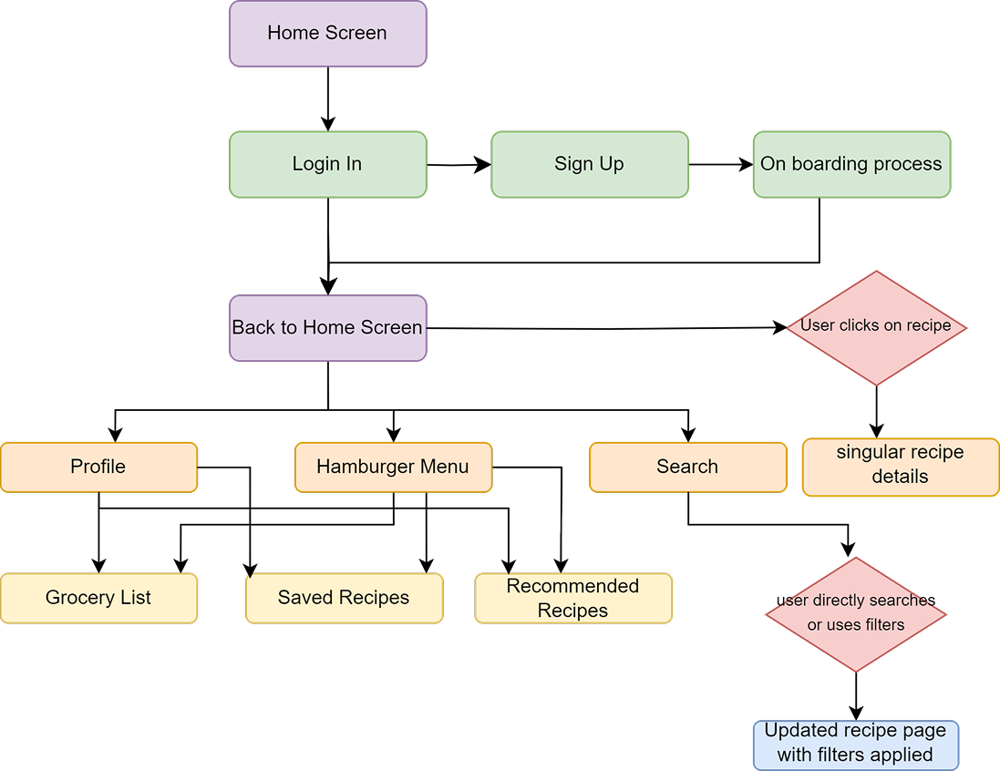
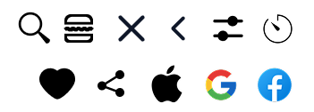
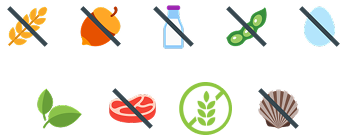

ReciFree
UX/UI Case Study | Responsive Web App
The Process
-
Objective
This is a MVP document for a Recipe App with a focus on dietary preferences and needs. The goal was to create a responsive web app for mobile and desktop. The app itself will enable users to browse recipes, filter ingredients, save favorite recipes, and create ingredient shopping lists.


-
Hypothesis
With prominent allergen indicators, easy recipe saving, and personalized recommendations, users with dietary restrictions can efficiently plan and prepare healthy meals that meet their needs.
-
Overview
Like approximately 32 million other Americans, I’ve faced the challenges of managing my own food allergies. It’s a struggle to find a recipe site that ALWAYS keeps allergens top of mind, with clear and easy-to-see indicators for each recipe. This inspired me to create just that! With a fun and inviting feel to tie it all together.
-
Users Can...
- Easily identify which recipes are free from specific allergens.
- Save recipes to revisit later.
- Add ingredients to a grocery list as needed.
- View personalized recipe recommendations with their allergies top of mind.
Mockups
(Scroll to view more)
 



User Research
-
Who?
Users with dietary restrictions or food allergies who are seeking recipes that cater to their specific needs.
-
What?
Users will find recipes that adhere to common allergies or diet restrictions. Save recipes to easily access at a later time. Create a shopping list of ingredients needed for each recipe.
-
When?
Users will use the app in their spare time when they want recipe inspiration. This could be morning, afternoon or evening - most likely after work, during a break, or before dinner when they want dinner ideas. As well as when they’re shopping at the grocery store - most likely after work or on the weekends.
-
Where?
Users will utilize the app when browsing for recipe inspiration at home, as well as when cooking at home. They will also use it while shopping at the grocery store.
-
Why?
Users will be able to effortlessly discover new recipes that meet their specific allergen and dietary restrictions, with clear indicators showing which recipes avoid particular allergens. Additionally, the app offers a convenient grocery shopping list feature
-
How?
Users can accomplish their goals by selecting a category that aligns with their allergen or diet preferences. They can then add the necessary ingredients to their grocery list and save any recipes for future reference.
Synthesis
- How do you typically find recipes that fit your dietary needs, and why?
- What do you enjoy/wish was different about your current go-to recipe apps?
- How often do you open a recipe website/app, and where do you typically do so?
- Do you currently plan your meals? What would make meal planning easier and more efficient for you?
- What features are most important to you in a recipe app?
- How do you prefer to search for recipes (e.g., by ingredient, meal type, dietary restriction)?
- What challenges do you face when looking for allergen-friendly recipes?
-
Patterns
- All users said appealing photos and a clean/clear interface is most important to them.
- Most users go to Google to search.
- Most users try to meal plan, but aren’t for every meal.
- Each user said they don’t want to read the bloggers story behind the recipe.
- All users said most sites and apps feel too busy visually.
- Most users search for recipes at least once a week, always at home.
-
Frustrations
- Each user said that most recipe sites/apps feel too cluttered and include too much of a blog feel.
- Users said they prefer to go straight to the recipe and ingredients needed for it.
- Users agreed most recipe sites look the same and aren’t very exciting.
User Flows
Wireframes
Low to Mid Fidelity
(Scroll to view more)
Style Guide
COLORS
LOGO
ICONS
DIETARY ICONS
TYPOGRAPHY
Lexend Deca
Conclusion
ReciFree emerged from my own frustrations navigating the world of food allergies and the noticeable gap in recipe resources that truly prioritize allergen awareness. To ensure the app effectively addressed the needs of this community, I conducted user research to understand common pain points and identify crucial missing features in existing platforms. This insight directly informed the development of ReciFree's core functionalities, including prominent allergen indicators and personalized recommendations.
The app's fun and inviting logo and overall design were crafted by me to create a welcoming and trustworthy experience for users seeking safe and delicious recipes. Moving forward, I'm eager to explore features like enhanced personalization based on specific allergy profiles and community-driven recipe sharing to further enhance the app's value and create a supportive cooking experience for everyone.